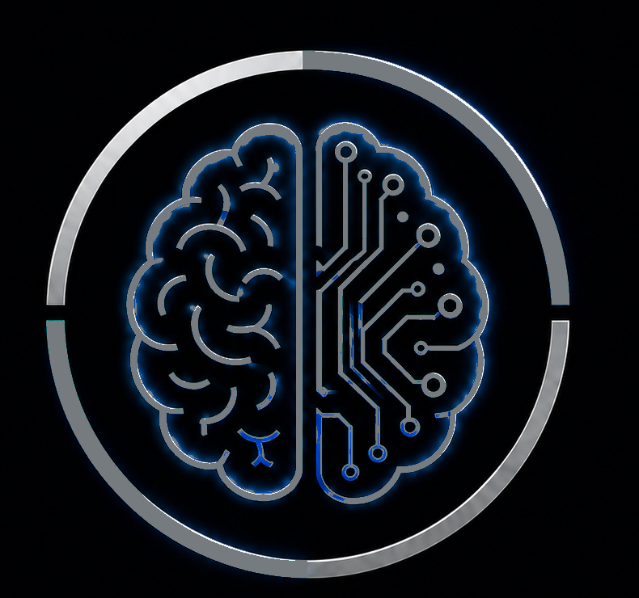
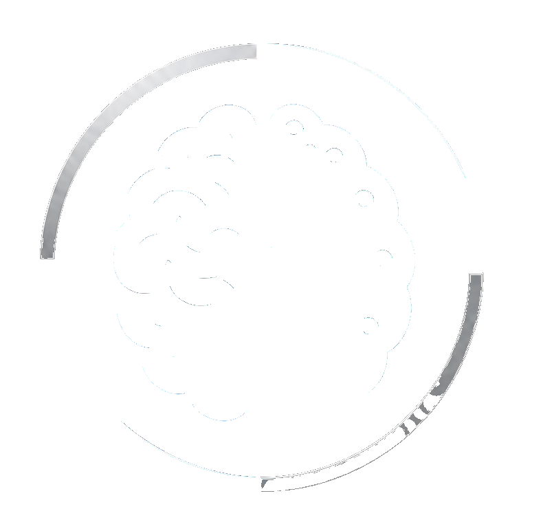
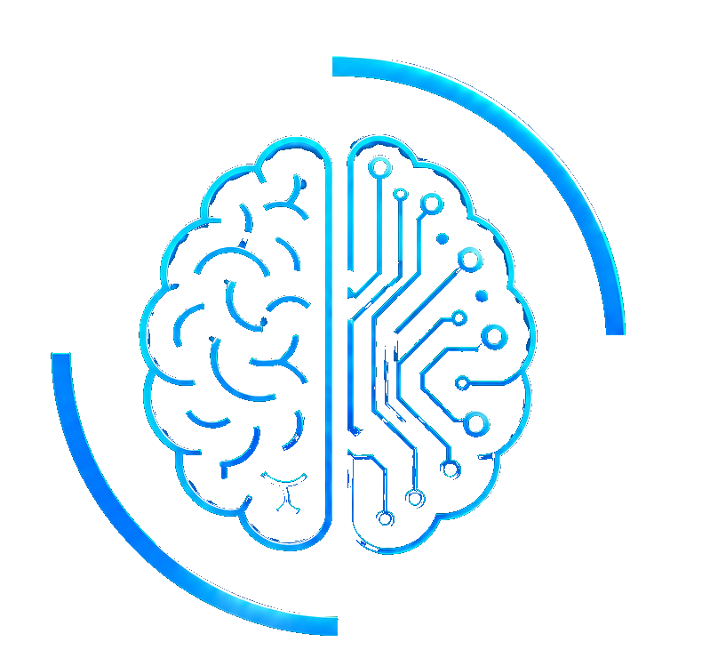

Persönlich
Projekte, Arbeitsstände und Entscheidungen bleiben sinnvoll miteinander verknüpft.



PERSÖNLICHE KI · SOFTWARE · SMARTWATCH
Tilsmee verbindet Projekte, Wissen und Geräte zu einem persönlichen System, das dich im Alltag wirklich unterstützen soll.
DIE VISION
Tilsmee soll deine Arbeitsweise, Projekte und Entscheidungen miteinander verbinden. Klar, persönlich und ohne unnötige technische Hürden.
Projekte, Arbeitsstände und Entscheidungen bleiben sinnvoll miteinander verknüpft.
Text und Sprache sollen sich direkt, verständlich und menschlich anfühlen.
Desktop, Smartphone und Smartwatch werden Teil eines gemeinsamen Systems.
TILSMEE WATCHFACE STUDIO
Uhrzeit, Datum, Wetter, Akku, Schritte und weitere Elemente sollen als frei positionierbare Ebenen gestaltet und exportiert werden können.
ROADMAP
Öffentlicher Auftritt und zentrale Projektplattform.
Editor, Ebenen, Vorschau und Exportworkflow.
Sprache, Wissen, Projekte und Geräte in einer Anwendung.
TILSMEE
Neue Funktionen, Tests und weitere Entwicklungsstände folgen direkt auf dieser Seite.
Kontakt aufnehmen